기계정비산업기사 (2012-03-04 기출문제)
1과목: 공유압 및 자동화시스템
1. 다음과 같은 유압회로에 대한 설명 중 틀린 것은?
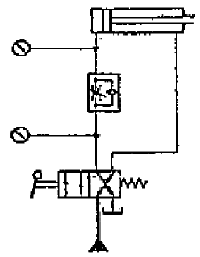
- 실린더의 속도를 항상 정확하게 제어할 수 있다.
- 실린더에 인장하중의 작용 시 카운터 밸런스 회로를 필요로 한다.
- 전진운동 시 실린더에 작용하는 부하변동에 따라 속도가 달라진다.
- 시스템에 형성되는 모든 압력은 항상 설정된 최대 압력 이내이다.
(정답률: 65%)

2. 유압 모터 중 가장 간단하며 출력 토크가 일정하고 정역회전이 가능하며 토크 효율이 약 75~85%, 전 효율은 약 80% 정도이고 최저 회전수는 150rpm 으로 정밀한 서보기구에는 적합하지 않은 모터는?
- 베인모터
- 액시얼 피스톤 모터
- 기어모터
- 레디얼 피스톤 모터
(정답률: 85%)
3. 다음 그림에서 S1과 S2를 동시에 누른 경우 램프에 불이 들어오는 논리회로의 구성방법을 무엇이라고 하는가?
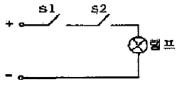
- AND 회로
- OR 회로
- NOT 회로
- NOR 회로
(정답률: 92%)
4. 어큐뮬레이터의 용도에 대한 설명으로 적합하지 않은 것은?
- 에너지 축적용
- 펌프 맥동 흡수용
- 압력 증대용
- 충격 압력의 완충용
(정답률: 75%)
5. 다음 기호의 명칭은?
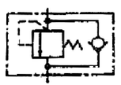
- 양방향 릴리프 밸브
- 무부하 릴리프 밸브
- 카운터 밸런스 밸브
- 1방향 교축 밸브
(정답률: 77%)
6. 유압제어 밸브의 분류이다. 잘못 연결된 것은?
- 일의 크기 - 압력 제어 밸브
- 일의 방향 - 방향 제어 밸브
- 일의 종류 - 유량 제어 밸브
- 일의 속도 - 유량 제어 밸브
(정답률: 91%)
7. 공압장치의 윤활기에 관한 일반적인 사항 중 잘못 설명된 것은?(오류 신고가 접수된 문제입니다. 반드시 정답과 해설을 확인하시기 바랍니다.)
- 과도한 윤활은 부품의 오동작을 야기한다.
- 윤활기의 세척은 중성세제를 사용한다.
- 윤활기는 밸브나 실린더 가까운 곳에 설치한다.
- 윤활기의 원리는 파스칼의 법칙을 응용한 것이다.
(정답률: 66%)
8. 압축성이 좋은 것부터 차례로 나열 한 것은?
- 액체 → 고체 → 기체
- 기체 → 액체 → 고체
- 고체 → 액체 → 기체
- 기체 → 고체 → 액체
(정답률: 87%)
9. 유압펌프의 고장 중 소음이 증대되는 원인이라고 할 수 없는 것은?
- 흡입관이 가늘거나 혹은 막혀 있다.
- 탱크 안에 기포가 있다.
- 흡입 필터를 설치하지 않았다.
- 전동기 축과 펌프 축의 중심이 잘 맞지 않았다.
(정답률: 71%)
10. 단위 질량당 유체의 체적(SI단위), 또는 단위 중량당 유체의 체적(중력단위)을 무엇이라고 하는가?
- 비중
- 비체적
- 밀도
- 비중량
(정답률: 66%)
11. 시퀀스 제어 회로 작성에 있어 간섭제거를 위해 사용하는 방법이 아닌 것은?
- 유도형 센서 사용
- 공압 타이머 사용
- 방향성 리밋 스위치 사용
- 공압 제어체인(예:캐스케이드방식)을 구성
(정답률: 43%)
12. 컴퓨터를 도입한 디지털 제어에 대한 설명으로 맞는 것은?
- 연속적인 정보를 가지고 있다.
- 제어정보는 카운터, 레지스터 등의 기구를 통해 입력된다.
- 아날로그 신호를 사용한다.
- 온도, 속도 등의 직접적인 값이 포함된다.
(정답률: 62%)
13. 유압시스템에서 기름 탱크 내의 유온이 안전온도 영역에 해당되는 것은 몇 ℃ 범위인가?
- 80~100
- 65~80
- 55~65
- 45~55
(정답률: 70%)
14. 요동형 액추에이터의 선정과 부수유지 시 고려사항과 거리가 먼 것은?
- 속도 조절은 미터인 방식으로 접속한다.
- 부하의 운동에너지가 기기의 허용 운동에너지 보다 큰 경우에는 외부 완충기구를 설치한다.
- 외부 완충기구는 부하쪽의 지름이 큰 곳에 설치하여 내구성의 향상과 정지 정밀도를 확보할 수 있게 한다.
- 축과 베어링에 과부하가 작용되지 않도록 과대부하를 직접 액추에이터 축에 부착하지 않고 축에 부하가 적게 작용하도록 부착한다.
(정답률: 62%)
15. 수치제어시스템의 벨트 장력조정에 대한 설명으로 맞는 것은?
- 설치 후 3개월 이내에 실시하고 이후 매 6개월에 1회 정도 실시한다.
- 설치 후 3개월 이내에 실시하고 이후 매 3개월에 1회 정도 실시한다.
- 설치 후 6개월 이내에 실시하고 이후 매 6개월에 1회 정도 실시한다.
- 설치 후 6개월 이내에 실시하고 이후 매 3개월에 1회 정도 실시한다.
(정답률: 77%)
16. 역학센서의 범주에 들지 않는 것은?
- 습도 센서
- 길이 센서
- 압력 센서
- 진동 센서
(정답률: 59%)
17. 공압 액추에이터 중 회전각도의 범위가 가장 큰 것은?
- 스크루형
- 크랭크 형
- 베인형
- 래크와 피니언 형
(정답률: 85%)
18. 개회로 제어와 폐회로 제어에 대한 설명으로 틀린 것은?
- 개회로 제어는 외란의 영향을 무시하고 제어계의 출력을 유지한다.
- 외란의 영향에 대응하는 제어가 폐회로 제어이다.
- 개회로 제어는 센서를 통해 출력을 연속적으로 감시한다.
- 폐회로 제어는 개회로 제어에 비해 설치에 많은 비용이 소요된다.
(정답률: 51%)
19. 다음 표에 나타낸 결과 Z는 어떤 연산의 수행을 나타낸 것인가?
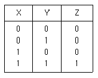
- AND
- OR
- NOT
- 플립플롭
(정답률: 84%)
20. 다음의 센서 중 온도센서에 해당하는 것은?
- 리드 스위치
- PTC
- 홀 소자
- 스트레인 게이지
(정답률: 66%)
2과목: 설비진단관리 및 기계정비
21. 보전용 자재의 상비품 발주방식에 해당 되는 것 은?
- 정량 발주방식
- 순환 발주방식
- 적소 발주방식
- 비상 발주방식
(정답률: 70%)
22. 일반적으로 사람이 들을 수 있는 주파수 범위는?
- 20~20000Hz
- 0.2~20000Hz
- 0~30000Hz
- 1000~30000Hz
(정답률: 87%)
23. 그리스의 내열성을 평가하는 기준이 되는 것은?
- 전산가
- 알칼리가
- 산화안정도
- 적하점
(정답률: 73%)
24. 가속도센서를 물체에 고정할 때 밀랍고정의 특징이 아닌 것은?
- 고정 및 이동이 용이하다.
- 먼지, 습기, 고온은 접착에 문제를 발생시키지 않는다.
- 장기적 안정성이 안 좋다.
- 사용 후 구조물의 접착면을 깨끗이 할 수 있다.
(정답률: 81%)
25. 설비관리에 있어서 TPM은 여러 가지 측면에서 전통적인 관리시스템과 차이가 있다. 다음 중 TPM관리와 가장 거리가 먼, 즉 전통적 관리 개념은 어떤 것인가?
- 원인추구 시스템
- 현장에서의 사실에 입각한 관리
- 문제가 발생한 후 해결하려는 접근 방식
- 로스(loss) 측정
(정답률: 77%)
26. 설비의 만성로스의 대책 중 잘못 된 것은?
- 현상 해석 철저
- 관리 요인계 철저한 검토
- 요인 중 숨어있는 결함의 표면화
- 속도저하 로스 극대화
(정답률: 77%)
27. 공압밸브에서 나오는 배기소음을 줄이기 위하여 사용되는 소음 방지장치로 가정 적당한 것은?
- 진동 차단기
- 차음벽
- 댐퍼
- 소음기
(정답률: 89%)
28. 설비의 분류가 옳게 연결된 것은?
- 관리 설비: 인입선설비, 도로, 항만설비, 배관, 계기, 배선, 조명, 냉난방 설비
- 유틸리티 설비 : 기계, 운반장치, 전기장치, 배관, 계기, 배선, 조명 냉난방 설비
- 판매설비 : 서비스 스테이션(service station), 서비스숍(service shop)
- 생산 설비 : 건물, 공장 관리설비 및 보조설비, 볼리 후생설비
(정답률: 81%)
29. 내연기관이 작동할 때 발생하는 진동의 종류는?
- 자유진동
- 강제진동
- 불규칙 진동
- 고유진동
(정답률: 70%)
30. 다음 중 보전활동을 위한 5S 활동이 아닌 것은?
- 검사
- 정돈
- 청소
- 청결
(정답률: 78%)
31. 제품의 물리적 특성이 기계와 사람을 제품으로 가져오도록 강요하는 설비배치 방식은?
- 제품별 배치(Product Layout)
- 공정별 배치(process Layout)
- 정지제품 배치(Static Product Layout)
- 혼합방식 배치(Mixed Model Layout)
(정답률: 71%)
32. 월간 사용량이 적고 단가가 높은 품목에 적용되는 보전 자재 관리법은?
- 정량 발주법
- 정기 발주법
- 2궤법
- 불출 후 발주법
(정답률: 66%)
33. 설비보전 조직의 직접 기능이 아닌 것은?
- 예방보전검사
- 원가보전
- 일상보전
- 사후보전
(정답률: 72%)
34. 진동차단기의 외부에서 들어오는 진동주파수와 시스템 고유주파수의비가 1에 근접할 때 진동차단 효과는?
- 증폭
- 낮음
- 보통
- 높음
(정답률: 65%)
35. 설비투자의 합리적인 투자결정에 필요한 경제성 평가방법이 아닌 것은?
- 자본회수법
- 비용비교법
- MAPI법
- 처분가치법
(정답률: 74%)
36. 직접적인 공기의 압력변화에 의한 유체역학적 원인에 의해 난류음을 발생시키는 것으로 맞는 것은?
- 압축기
- 송풍기
- 진공펌프
- 엔진 배기음
(정답률: 69%)
37. 설비의 고장률에 관한 설명으로 올바른 것은?
- 설비의 도입 초기에는 고장이 없다.
- 우발 고장기의 고장률 곡선은 고장률 증가형이다.
- 마모 고장기에서 예방정비의 효과가 크다.
- 설계불량으로 인한 고장은 우발 고장기에 주로 발생한다.
(정답률: 73%)
38. 설비의 기술적 표준으로서 검사, 정비, 수리 등의 보전작업방법과 보전작업시간 표준을 명시한 것은?
- 시운전 검수 표준
- 설비 성능 표준
- 설비 설계 규격
- 보전 작업 표준
(정답률: 82%)
39. 제품에 대한 전형적인 고장률 패턴은 욕조곡선으로 나타낼 수 있다. 욕조곡선은 크게 초기고장기간, 우발고장기간 그리고 마모고장기간으로 구분된다. 다음 중 우발고장 기간에 발생될 수 있는 원인과 관계가 없는 것은?
- 안전계수가 낮은 경우
- 스트레스가 기대 이상인 경우
- 사용자 과오가 발생한 경우
- 디버깅 중에 발견된 고장이 발생된 경우
(정답률: 81%)
40. 다음 그림과 같은 설비관리의 조직형태는?
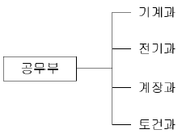
- 기능별 조직
- 매트릭스(Matrix) 조직
- 전문기술별 조직
- 대상별 조직
(정답률: 79%)
3과목: 공업계측 및 전기전자제어
41. 트랜지스터가 중폭을 하기 위해 동작점은 어느 동작영역에 있어야 하는가?
- 차단영역
- 활성영역
- 포화영역
- 항복영역
(정답률: 74%)
42. 다음 중 유도전동기의 보호방식에 속하지 않는 것은?
- 전개형
- 보호형
- 방수형
- 방진형
(정답률: 67%)
43. 환상 솔레노이드에서 인덕턴스는 다음 중 어느 것에 비례하는가?
- 전류
- 투자율
- 도전율
- 유전율
(정답률: 46%)
44. 정전압 특성을 전압 안정화 회로에 응용할 때 사용하는 다이오드는?
- 포토 다이오드
- 쇼트키 다이오드
- 제너 다이오드
- 터널 다이오드
(정답률: 85%)
45. 증폭기에서 잡음의 크기는 어떤 값으로 환산하여 표시하는가?
- 저항
- 온도
- 전류
- 전압
(정답률: 54%)
46. 참값 25.00[A]인 직류전류를 측정하여 24.85[A]의 값을 얻었다. 이 측정치의 백분율오차는?
- 0.3
- 0.6
- 0.9
- 1.0
(정답률: 63%)
47. 전자회로에서 온도보상용으로 많이 사용되는 소자는?
- 사이리스터
- 콘덴서
- 다이오드
- 서미스터
(정답률: 75%)
48. 논리식
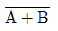
같은 의미를 나타내는 논리식은?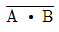
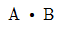
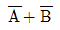
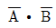
(정답률: 62%)
49. 직류기에서 기전력을 유도하는 부분은?
- 계자
- 전기자
- 정류자
- 계철
(정답률: 69%)
50. 다음 중 읽기와 쓰기 양쪽이 가능한 기억 소자는?
- RAM
- ROM
- PROM
- TTL
(정답률: 74%)
51. 다음 중 PLC의 입력부에 연결되어질 기기는 어느 것인가?
- 솔레노이드 밸브
- 광전 스위치
- 경보벨
- 표시램프
(정답률: 64%)
52. 60[Hz], 4극, 3상 유도전동기가 있다. 슬립이 4[%]일 때 전동기의 회전수는?
- 3600 [rpm]
- 1800[rpm]
- 1728[rpm]
- 1228[rpm]
(정답률: 67%)
53. 블록선도의 구성요소에서 그림과 같은 블록선도를 무엇이라 하는가?
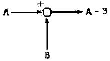
- 블록
- 가산점
- 인출점
- 직렬결합
(정답률: 77%)
54. 아래의 회로도에서 입력 A=0, B=1 일 때 출력 C, S로 알맞은 것은? (단, C: 자리올림(carry, S:합(sum))
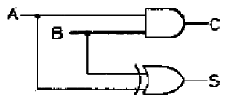
- C=0, S=0
- C=0, S=1
- C=1, S=0
- C=1, S=1
(정답률: 73%)
55. 입력신호가 어떤 정상상태에서 다른 상태로 변화 했을 때 출력신호가 정상상태에 도달하기까지의 특성을 무엇이라 하는가?
- 임펄스 응답
- 과도 응답
- 램프 응답
- 스템 응답
(정답률: 48%)
56. 다음 중 오실로스코프로 측정할 수 없는 것은?
- 주파수
- 전압
- 위상
- 임피던스
(정답률: 62%)
57. 다음 연산증폭기 중 아날로그 적분기에 속하는 것은?
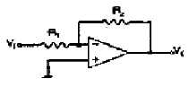
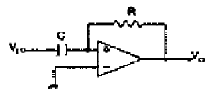
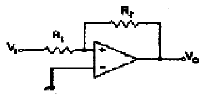
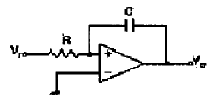
(정답률: 55%)
58. 열전대로 사용되어지는 금속의 조합으로 맞지 않는 것은?
- 철-콘스탄탄
- 크로멜-알루멜
- 구리-콘스탄탄
- 백금-콘스탄탄
(정답률: 74%)
59. 물탱크의 수위를 조절하는 자동스위치를 표시하는 것은?
- FS
- FCB
- FLTS
- FTS
(정답률: 62%)
60. 제어량이 온도, 압력, 유량 및 액면 등과 같은 일반 공업량일 때의 제어방식을 무엇이라고 하는가?
- 프로그램제어
- 프로세스제어
- 시퀀스 제어
- 추종제어
(정답률: 69%)
4과목: 기계정비 일반
61. 기어의 내경이 D이고, 죔새가Δt 일 때 가열온도 (T)를 구하는 식은? (단, 기어의 열팽창계수는 α이다.)
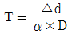
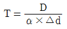
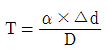
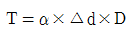
(정답률: 76%)
62. 죔쇠가 있는 베어링을 축에 설치할 경우 베어링의 적정 가열 온도는?
- 90~120℃
- 120~150℃
- 150~180℃
- 180~210℃
(정답률: 69%)
63. 롤러체인은 스프로킷 휨의 이가 마멸되면 진동, 소음이 발생하는데 이러한 결점을 감소시킬 수 있으나 제작이 어렵고 무거우며 가격이 비싼 체인은?
- 부시체인(bush chain)
- 더블 롤러체인(double roller chain)
- 오브셋 체인(offset chain)
- 사이런트 체인(silent chain)
(정답률: 77%)
64. 송풍기의 중심 맞추기(centering)에 일반적으로 사용되는 게이지는?
- 블록 게이지
- 다이얼 게이지
- 센터 게이지
- 높이 게이지
(정답률: 64%)
65. 아래의 그림에서 버니어캘리퍼스의 측정값은 얼마인가? (단, (70, 80 어미자 눈금),(0,1,2,3,4- 아들자 눈금))
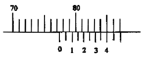
- 77.0mm
- 77.4mm
- 85.0mm
- 85.4mm
(정답률: 81%)
66. 강판을 정형하여 만든 너트로서 혀 부분이 나사 밑에 파고들어 풀림을 방지하는 너트는?
- 절삭 너트
- 더블 너트
- 홈달림 너트
- 플레이트 너트
(정답률: 66%)
67. 다음 측정기 중 비교 측정에 사용되는 것은?
- 버니어캘리퍼스
- 마이크로미터
- 측장기
- 전기마이크로미터
(정답률: 54%)
68. 기어의 손상 중 스코어링의 원인과 거리가 먼 것은?
- 급유량 부족
- 윤활유 점도 부족
- 내압성능 부족
- 충격과 하중
(정답률: 60%)
69. 배관 계통의 정비를 위하여 분해할 필요가 있는 곳에 사용하는 관 이음쇠로 맞는 것은?
- 유니언
- 엘보우
- 레듀셔
- 니플
(정답률: 76%)
70. 관로에 설치한 힌지로 된 밸브판을 가진 밸브로 밸브판을 회전시켜 개폐를 하며, 스톱밸브 또는 역지밸브로 사용되는 밸브는?
- 플랩(flap)밸브
- 게이트(gate) 밸브
- 리프트(lift) 밸브
- 앵글(angle) 밸브
(정답률: 66%)
71. 베어링 온도는 정상 운전 상태에서 주위 온도보다 얼마를 초과하지 말아야 하는가?
- 5~10℃
- 20~30℃
- 40~50℃
- 60~70℃
(정답률: 56%)
72. 수격현상의 피해를 설명한 것 중 적합하지 않은 것은?
- 압력강하에 따라 관로가 파손된다.
- 펌프 및 원동기에 역전, 과속에 따른 사고가 발생된다.
- 워터해머 상승 압에 따라 밸브 등이 파손된다.
- 수주분리현상에 기인하여 펌프를 돌리는 전동기의 전압 상승이 일어난다.
(정답률: 71%)
73. 압축기의 작동원리에 의한 종류가 아닌 것은?
- 왕복식 압축기
- 원심식 압축기
- 회전식 압축기
- 배압식 압축기
(정답률: 60%)
74. 윤활제의 부족에 의한 윤활불량, 베어링 조립불량, 체인, 벨트 등의 지나친 팽팽함, 커플링의 중심내기 불량이나 적정 틈새가 없어 스러스트를 받을 때 발생되는 전동기의 고장 현상은 무엇인가?
- 과열
- 소음, 진동
- 기동 불능
- 코일 소손
(정답률: 65%)
75. 합성고무와 합성수지 및 금속 클로이드 등을 주성분으로 한 액상 개스킷의 사용방법으로 옳지 않는 것은?
- 접합면의 수분, 기름, 기타 오물을 제거한다.
- 얇고 균일하게 칠한다.
- 바른 직후 접합해도 관계없다.
- 사용 온도 범위는 0~30℃까지의 범위이다.
(정답률: 75%)
76. 벨트식 무단변속기의 정비 관련 사항 중 틀린 것은?
- 벨트를 이동시킴에 있어서 무리가 발생될 수 있다.
- 벨트의 수명은 표준벨트를 표준적인 사용방법으로 운전할 때의 1~2배 정도이다.
- 가변피치 풀리의 습동부는 윤활 불량이 되기 쉽다.
- 광폭 벨트는 특수하므로 예비품 관리를 잘 해 두어야한다.
(정답률: 75%)
77. 기어의 치면 열화가 아닌 것은?
- 습동마모
- 소성항복
- 표면피로
- 과부하 절손
(정답률: 58%)
78. 원심펌프의 이상원인 중 시동 후 송출이 되지 않는 원인이 아닌 것은?
- 회전 방향이 다를 때
- 회전 속도가 너무 빠를 때
- 펌프 내 공기를 빼지 않았을 때
- 흡입관 끝이 충분히 액체에 잠겨 있지 않을 때
(정답률: 55%)
79. 두 축이 서로 평행한 기어는?
- 베벨 기어
- 헬리컬 베벨 기어
- 스파이럴 베벨 기어
- 헬리컬 기어
(정답률: 69%)
80. 스틸 플렉시블 커플링(steel flexible coupling)이라고도 하며 축 유동 오차를 허용하여 동력을 전달시키는 커플링은?
- 플랜지 플렉시블 커플링
- 체인 커플링
- 그리드 플렉시블 커플링
- 기어 커플링
(정답률: 70%)